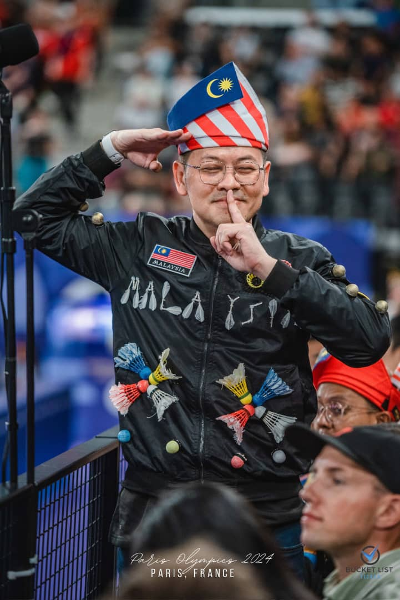
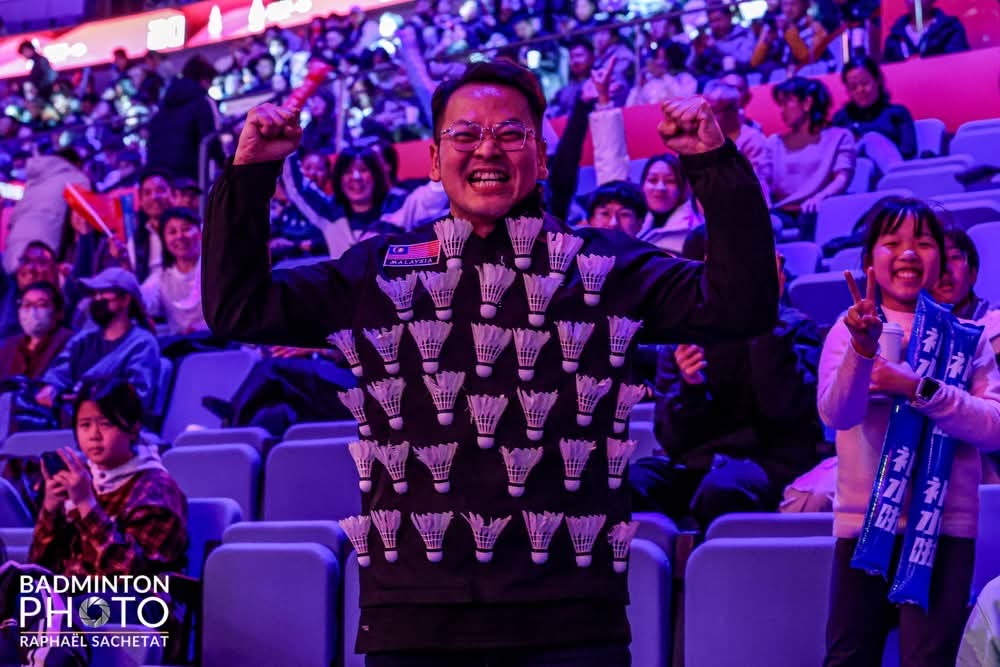
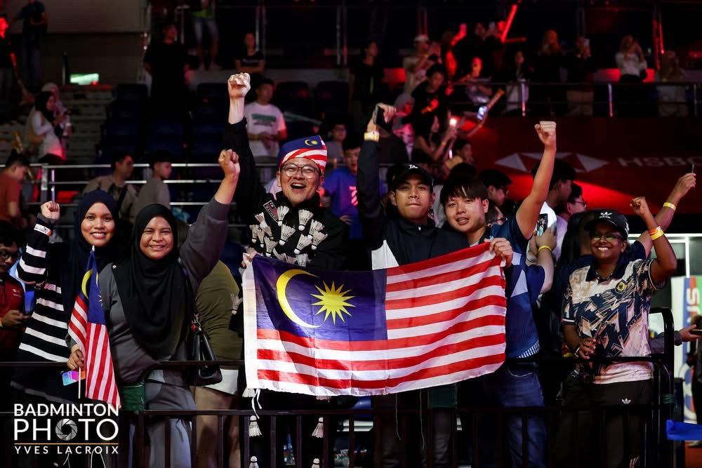
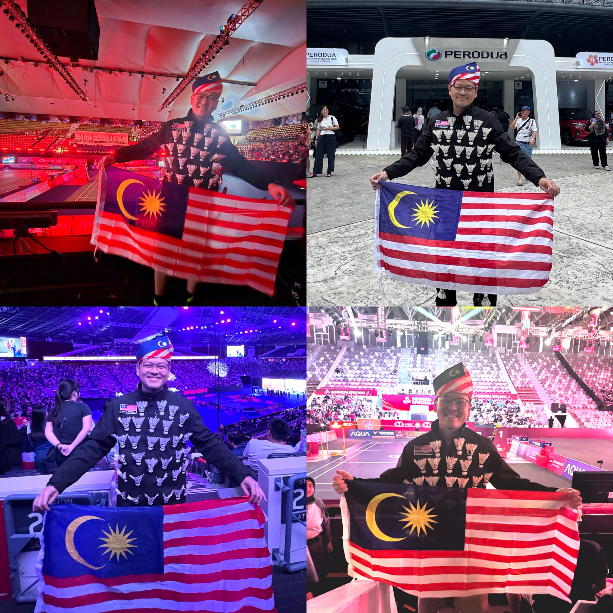
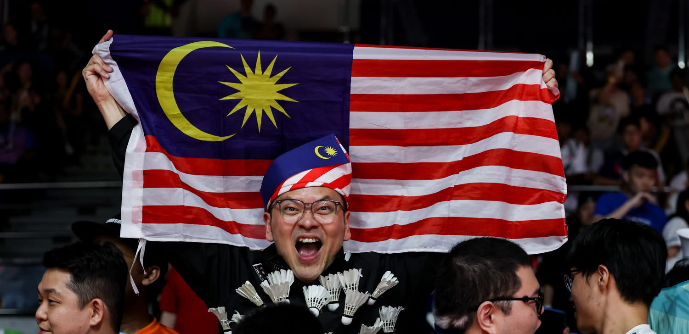

“Cheering is not just noise. It’s love. It’s belief. It’s my way of fighting for Malaysia.”
About Me
I’m Joe, better known as AhJo Badminton, a passionate Malaysian badminton superfan and cheerleader. My mission is to create an electrifying atmosphere for our national badminton players, ensuring they feel the unwavering support of Malaysian fans—no matter where they compete.
Badminton has long been a source of national pride for Malaysia, with our athletes consistently ranking among the world’s best. However, on the global stage, they often find themselves in arenas where Malaysian voices are outnumbered. To bridge this gap, I am working to establish an official Malaysian badminton support and cheerleading team. This initiative will not only boost our players’ morale but also strengthen our nation’s badminton culture worldwide.
My Journey – Fueled by Love and Sacrifice
From the roars at Thailand Open to the tears at Malaysia Masters, the chants in Singapore, and the energy in Indonesia, I was there—not as a player or VIP, but as a fan with a heart full of hope.
- Cheered through pain, lost my voice, cried during the anthem, and smiled through defeat.
- Hugged strangers who became family and stood under flags that waved with pride.
- All because I believe in Malaysia. Always.
My Journey (2024 - 2025)
I actively attend major international badminton tournaments to support our players. Below are some of the key events where I’ve cheered for Malaysia:
- 2024: Malaysia Open, Badminton Asia Championships, Thailand Open, Malaysia Masters, Singapore Open, Australia Open, Paris Olympics, Petronas International Challenge, KL Masters 100, China Masters, BWF World Tour Finals
- 2025: Malaysia Open, All England, Thailand Open, Malaysia Masters, Singapore Open, Indonesia Open
Milestones That Matter
- Supported live at: Thailand Open, Malaysia Masters, Singapore Open, Indonesia Open 2025
- Interviewed by Astro Arena, TV3, Hot FM, Era.FM, The Star, Sin Chew Daily
Media Features
My dedication to Malaysian badminton has been recognized by various media outlets including:
- Astro Arena HD, The Star, Sin Chew Daily
- BWF YouTube, The Rakyat Post, and more
My Impact
- Viral cheers and emotional moments that touched millions on Facebook & Instagram
- Cheered Malaysia to the podium in Super 1000 events
- Organized fan giveaways, posters, and motivational content to unite supporters
- Created unforgettable energy in stadiums that made our players feel they’re never alone
The Vision: Building a Stronger Malaysian Badminton Support System
The Malaysian badminton support and cheerleading team is more than just a group of fans—it’s a movement to:
- Strengthen national pride and unity through badminton
- Ensure our athletes never feel alone, no matter where they compete
- Establish structured, passionate fan support that travels globally
Let’s Work Together
I’m on a mission—and I can’t do it alone. I’m looking for brands, media, and sponsors who believe in more than just winning... who believe in heart, passion, and purpose.
Let’s raise our voices louder. Let’s show the world the spirit of Malaysia. Together, we don’t just cheer. We make history.
Unforgettable Moments





Followers & Reach
- Facebook: 6.9M views
- Instagram: 1.7M views